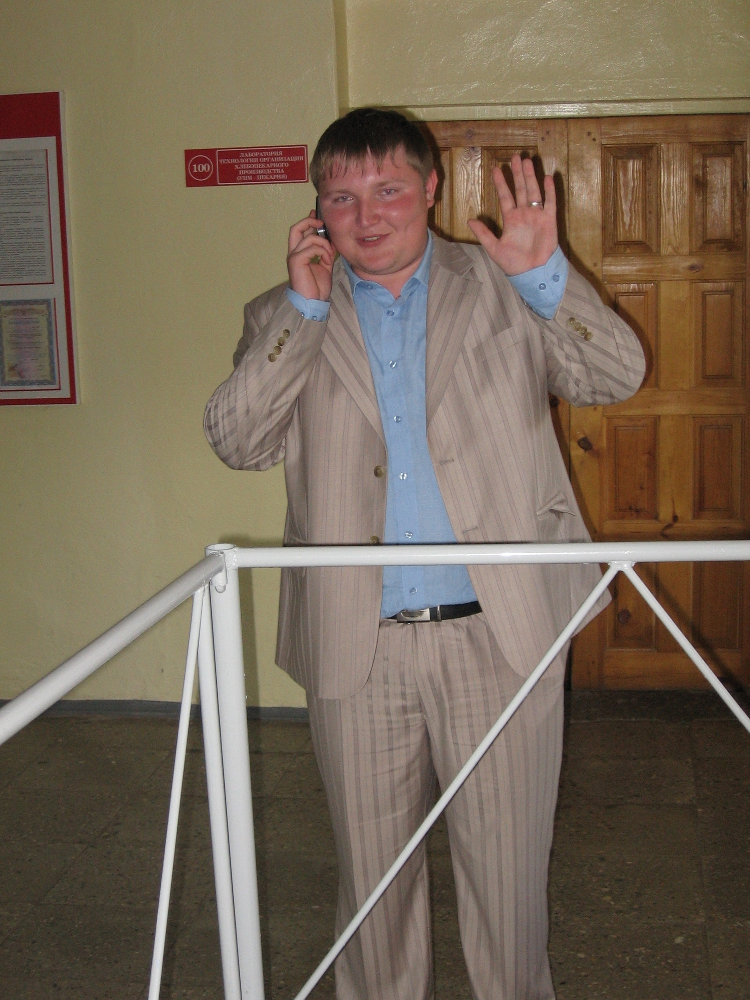
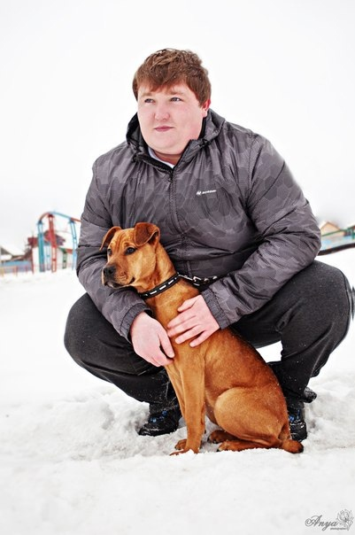
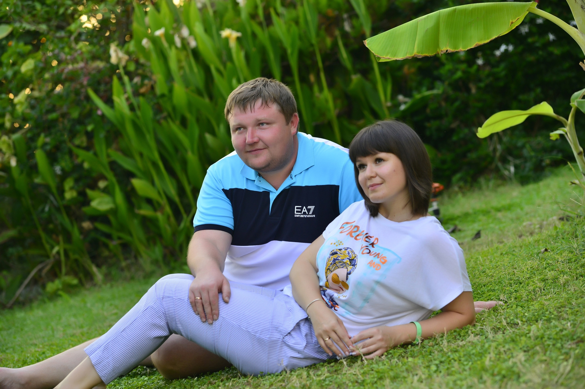

Выпускники 2007 года
Встречайте выпускник 2007 года Лоскутов Павел. Павел учился в одной из самых больших по количеству человек в группе специальности. Родом Павел из р.п. Шаранга.
❗ В 2010 году закончил заочное отделение Нижегородского государственного университета им. Н.И.Лобачевского, специальность Экономика и управление на предприятии(в машиностроении).
❗С 2007 года работал В Шарангском Райпо на должности техника.
❗ В дальнейшем совмещал работу Шарангское ЦРБ, Шарангский Хлебокомбинат, Судебный департамент Нижнего Новгорода и т.д.
❗26.04.2013 Зарегистрировался в качестве ИП.
На сегодняшний день занимается:
- обслуживанием организаций ПК и ПО;
- ремонтом ПК и оргтехники;
- заправкой и восстановление картриджей;
- ремонт техники apple
- около 30 организациям оказывает услуги.
❗А еще Павел говорит: "Никогда бы не подумал что свяжу свою жизнь с работой по специальности. Люблю зарабатывать :)"


